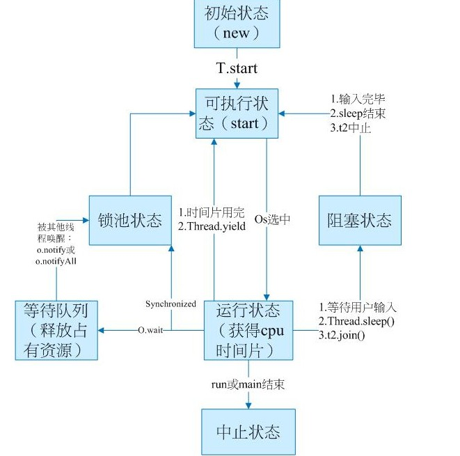

进程是系统进行资源分配和调度的一个独立单位.
线程是进程的一个实体,是CPU分配和调度的基本单位.线程自己基本上不拥有系统资源,
只拥有一点在运行中必不可少的资源(如程序计数器,一组寄存器和栈),它可与同属一个进程的其他的线程共享进程所拥有的全部资源.
进程和线程的区别在于:
1.一个程序至少有一个进程,一个进程至少有一个线程. 线程的划分尺度小于进程，使得多线程程序的并发性高。
2.进程在执行过程中拥有独立的内存单元，而多个线程共享内存，从而极大地提高了程序的运行效率。
3.每个独立的线程有一个程序运行的入口、顺序执行序列和程序的出口。但是线程不能够独立执行，必须依存在应用程序中，
由应用程序提供多个线程执行控制。从逻辑角度来看，多线程的意义在于一个应用程序中，有多个执行部分可以同时执行。
线程状态:
1、新建状态(New)：新创建了一个线程对象。
2、就绪状态(Runnable)：线程对象创建后，其他线程调用了该对象的start()方法。该状态的线程位于可运行线程池中，变得可运行，等待获取CPU的使用权 。
3、运行状态(Running)：就绪状态的线程获取了CPU ，执行程序代码。
4、阻塞状态(Blocked)：阻塞状态是线程因为某种原因放弃CPU使用权，暂时停止运行 。
直到线程进入就绪状态，才有机会转到运行状态。阻塞的情况分三种：
(一)、等待阻塞：运行的线程执行wait()方法，JVM会把该线程放入等待池中。
(二)、同步阻塞：运行的线程在获取对象的同步锁时，若该同步锁被别的线程占用，则JVM会把该线程放入锁池中。
(三)、其他阻塞：运行的线程执行sleep()或join()方法，或者发出了I/O请求时，JVM会把该线程置为阻塞状态。
当sleep()状态超时、join()等待线程终止或者超时、或者I/O处理完毕时，线程重新转入就绪状态。
5、死亡状态(Dead)：线程执行完了或者因异常退出了run()方法，该线程结束生命周期。

方法A:从Java.lang.Thread类派生一个新的线程类，重载它的run()方法
代码举例:
/**
* 从Java.lang.Thread类派生一个新的线程类，重载它的run()方法；
* @author Administrator
* 功能:假设一个影院有三个售票口，分别用于向儿童、成人和老人售票。影院为每个窗口放有100张电影票，
* 分别是儿童票、成人票和老人票。三个窗口需要同时卖票，而现在只有一个售票员，
* 这个售票员就相当于一个CPU，三个窗口就相当于三个线程
*/
class MutliThread1 extends Thread{
private int ticket=100;//每个线程都拥有100张票
MutliThread1(String name){
super(name);//调用父类带参数的构造方法
}
public void run(){
while(ticket>0){
System.out.println(ticket--+" is saled by "+Thread.currentThread().getName());
}
}
public static void main(String[] args) {
MutliThread1 m1=new MutliThread1("Window 1");
MutliThread1 m2=new MutliThread1("Window 2");
MutliThread1 m3=new MutliThread1("Window 3");
m1.start();
m2.start();
m3.start();
}
}
方法B:实现Runnalbe接口，实现Runnalbe接口中的run()方法,在通过Thread来封装Runnable
代码举例:
/**
* 实现Runnalbe接口，实现Runnalbe接口中的run()方法
* @author Administrator
* 功能:[同上面一样]假设一个影院有三个售票口，分别用于向儿童、成人和老人售票。影院为每个窗口放有100张电影票，
* 分别是儿童票、成人票和老人票。三个窗口需要同时卖票，而现在只有一个售票员，
* 这个售票员就相当于一个CPU，三个窗口就相当于三个线程
*/
public class MutliThread2 implements Runnable{
private int ticket=100;//每个线程都拥有100张票
private String name;
MutliThread2(String name){
this.name=name;
}
public void run(){
while(ticket>0){
System.out.println(ticket--+" is saled by "+name);
}
}
public static void main(String[] args) {
MutliThread2 m1=new MutliThread2("Window 1");
MutliThread2 m2=new MutliThread2("Window 2");
MutliThread2 m3=new MutliThread2("Window 3");
Thread t1=new Thread(m1);
Thread t2=new Thread(m2);
Thread t3=new Thread(m3);
t1.start();
t2.start();
t3.start();
}
}
区别:通过实现Runnable接口并被Thread封装的创建方式远远优于继承Thread方式的创建
代码:
/**
* 模拟一个火车站的售票系统，假如当日从A地发往B地的火车票只有100张，且允许所有窗口卖这100张票，
* 那么每一个窗口也相当于一个线程，但是这时和前面的例子不同之处就在于所有线程处理的资源是同一个资源
* @author Administrator
*
*/
public class MutliThreadShareResource implements Runnable{
private int ticket=100;//每个线程都拥有100张票
public void run(){
while(ticket>0){
System.out.println(ticket--+" is saled by "+Thread.currentThread().getName());
}
}
public static void main(String[] args) {
MutliThreadShareResource m=new MutliThreadShareResource();
Thread t1=new Thread(m,"Window 1");
Thread t2=new Thread(m,"Window 2");
Thread t3=new Thread(m,"Window 3");
t1.start();
t2.start();
t3.start();
}
}